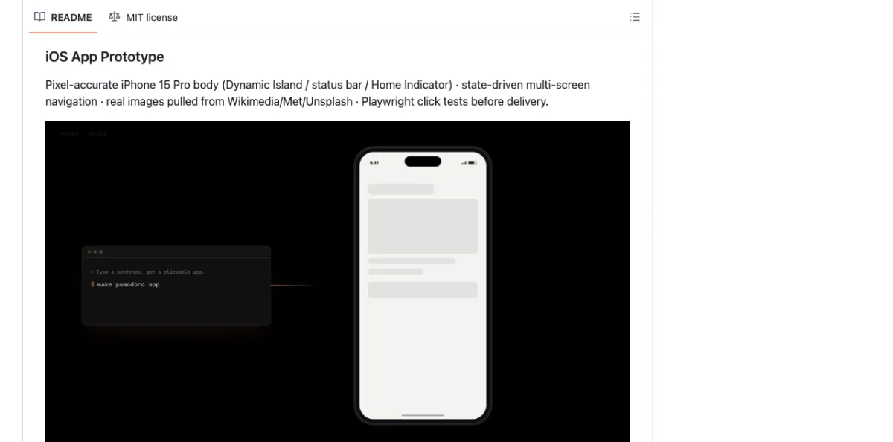
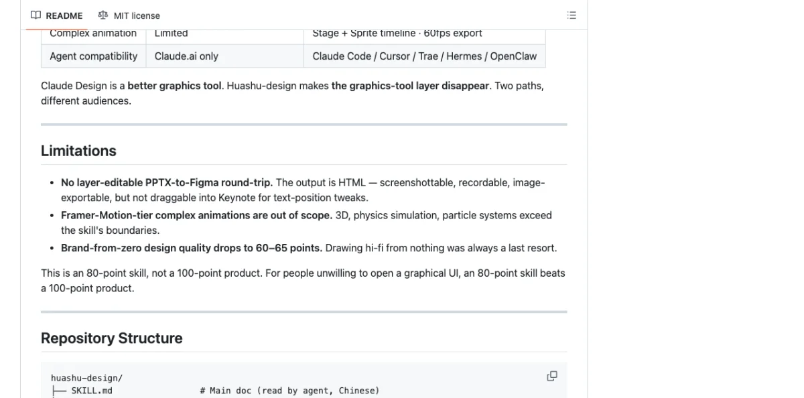
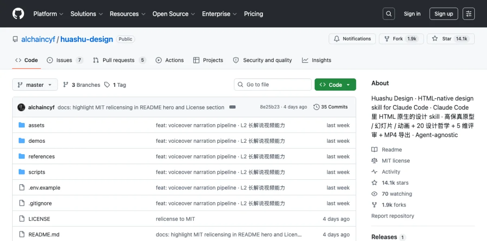
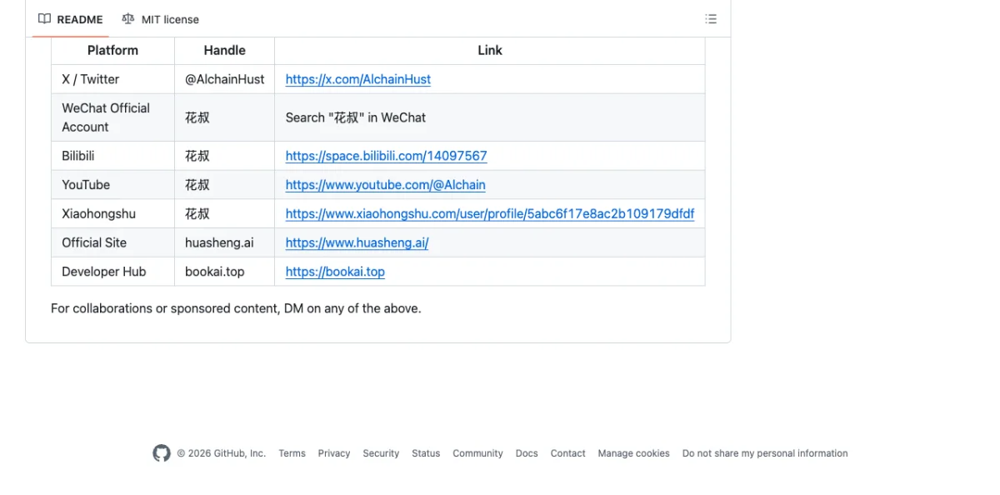

What Makes Huashu Design Different
Most design tools give you a canvas, panels, and property inspectors. Huashu Design gives you none of that. The entire tool is a SKILL.md file --- 811 lines of instructions that teach any skill-capable agent how to produce production-grade visual artifacts using nothing but HTML, CSS, and JavaScript.
The distinction matters. When I say "HTML-native design," I don't mean "export to HTML." I mean the agent embodies different roles depending on the task --- UX designer for prototypes, animator for motion design, slide designer for decks --- and produces HTML as the primary artifact. There is no graphics tool layer. The conversation is the interface.
Created by 花叔 (Huasheng, @AlchainHust), an independent developer whose other work includes A Book on DeepSeek and the Nüwa.skill framework (12k+ stars). As of May 2026, Huashu Design is MIT licensed, free for personal and commercial use, and runs on Claude Code, Cursor, Codex, Trae, Hermes, OpenClaw --- any agent that reads markdown skill files.
| Attribute | Detail |
|---|---|
| GitHub stars | 14.1k (May 2026) |
| License | MIT |
| Author | 花叔 (@AlchainHust) |
| Format | SKILL.md (markdown skill file) |
| Agent compatibility | Any skill-capable agent |
| Output formats | HTML, MP4, GIF, PPTX, PDF |
| Install | npx skills add alchaincyf/huashu-design |
The comparison with Claude Design (Chapter 06) is instructive. Claude Design is a web product --- you use it in a browser, on a canvas. Huashu Design lives inside your agent session. Claude Design is Claude-only. Huashu Design runs on anything that reads SKILL.md. Claude Design exports to canvas and Figma. Huashu Design exports HTML, MP4, GIF, PPTX, and PDF.
| Aspect | Claude Design | Huashu Design |
|---|---|---|
| Form | Web product (browser) | Skill (in agent) |
| Agent compatibility | Claude.ai only | Any skill-capable agent |
| Output | Canvas + Figma export | HTML/MP4/GIF/PPTX/PDF |
| Complex animation | Limited | Stage + Sprite timeline, 60fps |
| Pricing | Subscription | Free (MIT), API usage costs |
Installing and Configuring Huashu Design
One command:
$ npx skills add alchaincyf/huashu-designThat drops the skill into your agent's skill directory. No app to install. No plugin to configure. No Figma integration to set up. The agent reads the skill file and follows its instructions.
The repository structure tells you everything about what the skill can do:
huashu-design/
├── SKILL.md
├── assets/
│ ├── animations.jsx
│ ├── ios_frame.jsx
│ ├── deck_stage.js
│ ├── design_canvas.jsx
│ └── showcases/
├── references/
│ ├── animation-pitfalls.md
│ ├── design-styles.md
│ ├── slide-decks.md
│ ├── editable-pptx.md
│ ├── critique-guide.md
│ └── video-export.md
├── scripts/
│ ├── render-video.js
│ ├── convert-formats.sh
│ ├── add-music.sh
│ ├── export_deck_pdf.mjs
│ ├── export_deck_pptx.mjs
│ └── html2pptx.js
└── demos/The SKILL.md is the main instruction file. The assets/ directory holds starter components --- animation APIs, iOS device frames, deck templates. The references/ directory contains drill-down docs the agent can load when it needs deeper guidance on a specific task. The scripts/ directory is the export toolchain.
After installation, you start a conversation with your agent and describe what you want. The skill activates when the agent detects a design task. You don't invoke it explicitly.
The Junior Designer Workflow
This is the core pattern of Huashu Design. The agent is your junior designer. You are the manager. The workflow exists because one-shotting a complex design rarely produces good results.

The rule is simple: never one-shot a big design. Start with assumptions, placeholders, and reasoning comments baked into the HTML. Show early. Get feedback. Then iterate.
Ask questions, batch them, wait for answers
Write assumptions + placeholders + reasoning in HTML
Present the rough draft, even if just gray blocks
Fill real content, add variations, Tweaks
Eyeball with Playwright before delivery
"Fixing a misunderstanding early is 100x cheaper than fixing it late." This isn't a platitude. It's the engineering principle behind the entire workflow. The agent writes /* assumption: user wants dark mode */ directly into the HTML. You see the assumption. You correct it immediately. The alternative --- the agent spending 10 minutes building a polished design on wrong assumptions --- wastes everyone's time.
The skill uses the React + Babel pattern for live rendering. All starter components load via <script type="text/babel"> tags, which means the agent writes JSX that compiles in the browser. No build step. No bundler. The HTML file is the deliverable.
<!DOCTYPE html>
<html>
<head>
<script src="https://unpkg.com/react@18/umd/react.production.min.js"></script>
<script src="https://unpkg.com/react-dom@18/umd/react-dom.production.min.js"></script>
<script src="https://unpkg.com/@babel/standalone/babel.min.js"></script>
</head>
<body>
<div id="root"></div>
<script type="text/babel">
function App() {
return <div style={{padding: 32}}>
{/* placeholder: hero section */}
<div style={{
height: 400,
background: 'var(--surface-muted)',
display: 'flex',
alignItems: 'center',
justifyContent: 'center',
borderRadius: 12
}}>
[Hero placeholder — awaiting copy]
</div>
</div>;
}
ReactDOM.createRoot(document.getElementById('root')).render(<App/>);
</script>
</body>
</html>The Tweaks system enables live variant switching. The agent renders multiple design variations with parameter controls. You adjust parameters and see changes instantly, without regenerating the entire file.
My take: The Junior Designer Workflow is the most important contribution Huashu Design makes to the agent design ecosystem. Most agent-generated design fails because the agent tries to produce a final artifact immediately. Huashu's approach --- hypothesis first, polish later --- maps onto how real designers actually work. I use this pattern even when I'm not using Huashu Design specifically.
Core Asset Protocol: Brand-Consistent Output
The hardest rule in the skill. When your task involves a specific brand, the agent must follow a 5-step process before writing a single line of HTML.
The problem the protocol solves: agents default to generic visuals. Without real brand assets, an iPhone prototype looks like every other phone. A Volta Motors slide deck looks like a generic car pitch. The Core Asset Protocol forces the agent to gather real assets first.
Ask for 6 asset types: logo, product shots, UI screenshots, color palette, fonts, brand guidelines. The agent presents a checklist and waits.
Search official channels: <brand>.com/brand, <brand>.com/press, brand.<brand>.com, product pages, launch films. Three fallback paths per asset type.
Download by asset type. Logo: SVG file, then inline SVG extraction from homepage, then social media avatar. Product shots: product page hero, then press kit, then YouTube video frame, then AI-generated from reference. UI: App Store screenshots, then official video frames, then user screenshots.
Verify and extract. Check resolution, fidelity, freshness. Grep exact colors from real assets.
Freeze to spec. Write brand-spec.md with all paths, CSS variables, and constraints. All generated HTML references var(--brand-*) exclusively --- never hardcoded values.
The quality gate is called the 5-10-2-8 rule: 5 rounds of search, 10 candidates, pick the 2 best, each must score 8 out of 10 or higher on fidelity.
The asset importance ranking keeps the agent focused:
| Priority | Asset Type | Notes |
|---|---|---|
| Mandatory | Logo | No exceptions. Without the real logo, brand recognition is zero. |
| High | Product renders | For physical products. Real photos, never CSS silhouettes. |
| High | UI screenshots | For digital products. App Store captures work well. |
| Auxiliary | Color values | Grepped from real assets, not guessed. |
| Auxiliary | Fonts | From brand guidelines or identified from screenshots. |
The anti-pattern the protocol explicitly forbids: using CSS silhouettes or SVG hand-drawn substitutes for real product images. The skill calls this out as producing "generic tech animation with zero brand recognition." I've seen this failure mode in every agent design tool that doesn't enforce asset gathering.
Before the Core Asset Protocol runs, Principle #0 kicks in: fact verification. If the task mentions a specific product, technology, or event, the agent must search first to confirm it exists. The canonical failure case: an agent assumed "DJI Pocket 4" wasn't released yet, but it had launched four days earlier. The search costs 10 seconds. The wrong assumption costs 1-2 hours of rework.
The frozen brand spec looks like this:
# Volta Motors · Brand Spec
> Collected: 2026-05-18
> Sources: voltamotors.com/press, voltamotors.com/design
> Completeness: complete
## Core Assets
### Logo
- Main: assets/volta-brand/logo.svg
- Inverted: assets/volta-brand/logo-white.svg
### Product Images
- Hero: assets/volta-brand/volta-ev-hero.png (2000x1500)
- Detail: assets/volta-brand/volta-ev-interior.png
## Color Palette
- Primary: #0066CC
- Background: #FFFFFF
- Ink: #000000
- Surface: #F5F5F5
- Forbidden: never use red tones
## Typography
- Display: 'Volta Sans', 'Inter', sans-serif, 700
- Body: 'Volta Sans', 'Inter', sans-serif, 400
- Mono: 'JetBrains Mono', monospace, 400Design Direction Advisor: 5 Schools x 20 Philosophies
When the brief is vague --- no brand context, no style reference, user wants recommendations --- the Direction Advisor activates. It presents 20 design philosophies organized into 5 schools, each with a distinct worldview.


| School | Philosophies | Exemplar |
|---|---|---|
| Information Architecture | 4 philosophies (01-04) | Pentagram --- rational, data-driven, restrained |
| Kinetic Poetry | 4 philosophies (05-08) | Field.io --- dynamic, immersive, technical aesthetics |
| Minimalism | 4 philosophies (09-12) | Kenya Hara --- order, whitespace, refinement |
| Experimental Avant-Garde | 4 philosophies (13-16) | Sagmeister --- pioneer, generative art, visual impact |
| Eastern Philosophy | 4 philosophies (17-20) | Warm, poetic, contemplative |
The advisor follows an 8-phase flow:
- Deep understanding --- max 3 questions, no more.
- Advisory restatement --- 100-200 words confirming what the agent understood.
- Recommend 3 philosophies --- must be from 3 different schools.
- Show showcase gallery --- 24 prebuilt samples (8 scenes x 3 styles).
- Generate 3 visual demos --- parallel if the agent supports subagents.
- User picks one, mixes, or requests a redo.
- Generate AI prompt with specific characteristics from the chosen direction.
- Continue into the Junior Designer main flow.
Example prompt that triggers the advisor:
"Make a keynote for AI psychology. Give me 3 style directions to pick from."The agent asks up to 3 clarifying questions, then presents 3 directions from different schools --- say, an Information Architecture approach, a Kinetic Poetry approach, and an Eastern Philosophy approach --- with live HTML demos for each. You pick one. The agent then builds the full artifact using that direction's constraints.
The parallel demo generation is worth emphasizing. If your agent supports subagents (Chapter 11), it generates all 3 demos simultaneously. On a single-agent setup, it generates them sequentially. The quality difference is negligible --- the parallelism is a speed optimization, not a quality one. What matters is that you see real, rendered HTML before you commit, not descriptions or mood boards.
The 24 prebuilt showcases serve a specific purpose: they give you a visual vocabulary. Most people can't describe what they want in design terms. But when you see a Minimalist layout next to a Kinetic Poetry layout next to an Eastern Philosophy layout, you can point and say "something like that one." The showcases bridge the gap between vague intent and specific direction.
Anti-AI-Slop Rules and Quality Guardrails
The skill defines "AI slop" precisely: the visual greatest common denominator of AI training data. It carries zero brand information. You've seen it. Aggressive purple gradients. Emoji as icons. Rounded cards with a left colored border. Dark blue #0D1117 backgrounds. Inter or Roboto as the display font.
The skill lists specific elements to avoid:
- Aggressive purple gradients (the AI "tech feel" formula)
- Emoji as icons (training data's "every bullet needs emoji" disease)
- Rounded cards + left colored border accent (2020-2024 Material/Tailwind cliché)
- SVG-drawn imagery --- faces, scenes, objects --- always anatomically wrong
- CSS silhouettes or SVG hand-drawn substitutes for real product shots
- Inter, Roboto, Arial, or system fonts as display type
- Cyber neon or dark blue
#0D1117backgrounds
One exception: "the brand itself uses it" is the only valid reason to break any rule.
The positive replacements are more interesting:
text-wrap: pretty+ CSS Grid + advanced CSS --- typographic details AI can't distinguish from human workoklch()colors or colors extracted from real assets, never invented- AI-generated images (via Gemini/Flash) over SVG hand-drawn --- the real thing looks better than any approximation
- Serif display fonts (Newsreader, Source Serif, EB Garamond) for personality
- One detail at 120%, everything else at 80% --- the definition of taste
That last rule is worth pausing on. "One detail at 120%, everything else at 80%." Most AI-generated design is 100% everything --- every element competing for attention, nothing breathing. Restraint is the signal.
The 5-Dimension Expert Critique
After the agent produces an artifact, you can run a critique. The skill evaluates on 5 dimensions, each scored 0-10:

- Philosophy coherence --- does the output match the chosen design direction consistently?
- Visual hierarchy --- can you tell what matters most? Does the eye flow correctly?
- Execution craft --- typography, spacing, alignment, color accuracy. The details.
- Functionality --- do interactive elements work? Do links go places? Is the prototype actually clickable?
- Innovation --- does anything surprise? Or is it a competent reproduction of a template?
The output is a radar chart visualization plus a Keep/Fix/Quick Wins punch list. It takes about 3 minutes to run.
"Run a 5-dimension expert review on this design."The critique is honest. I've run it on the skill's own output and received scores of 6/10 on innovation. That's appropriate. The value of the critique isn't the score --- it's the specific fix items. "The hero section has correct hierarchy but the footer uses a different spacing scale than the rest of the page. Quick win: unify to the 8px grid."
My take: The self-critique capability is the feature I didn't know I needed. Most agent design tools produce output and stop. Huashu Design produces output, then evaluates its own work against explicit criteria. The radar chart makes the evaluation legible. I run the critique on every artifact before delivery, even when I think it looks good.
Export: MP4, GIF, PPTX, PDF
Huashu Design doesn't just produce HTML. The scripts/ directory contains a full export toolchain.
Motion design: MP4 at 25fps base with 60fps interpolation. GIF with palette optimization. 6 scene-specific background music tracks with automatic ducking. The animation model uses Stage + Sprite time-slicing with useTime, useSprite, interpolate, and Easing APIs from assets/animations.jsx.
// Stage + Sprite animation model (from assets/animations.jsx)
function ProductReveal() {
const time = useTime();
const spriteProgress = useSprite(time, {
duration: 2,
easing: Easing.easeOutExpo
});
const logoScale = interpolate(spriteProgress, [0, 1], [0, 1]);
const titleOpacity = interpolate(spriteProgress, [0.3, 0.8], [0, 1]);
return (
<Stage background="var(--brand-background)">
<Sprite style={{
transform: `scale(${logoScale})`,
opacity: titleOpacity
}}>
<img src="var(--brand-logo)" alt="Logo" />
</Sprite>
</Stage>
);
}Slide decks: HTML deck for browser presentation, plus editable PPTX via html2pptx.js. This is not a screenshot export. The script translates DOM computed styles to real PowerPoint objects --- actual text frames, shapes, and formatting. You get a PPTX file someone can edit in PowerPoint without knowing HTML existed.
Infographics: Print-quality typography with PDF, PNG, and SVG export.
The narrated animation pipeline is particularly sophisticated: TTS generates voice, the agent measures duration, generates timeline.json, a NarrationStage drives visuals to match the audio, ducking mix blends voice and music, and the deliverable is both a live-play HTML version and a published MP4.
| Capability | Deliverable | Typical Time |
|---|---|---|
| Interactive prototype | Single-file HTML, real iPhone bezel, clickable | 10-15 min |
| Slide deck | HTML deck + editable PPTX | 15-25 min |
| Motion design | MP4 + GIF + BGM | 8-12 min |
| Design variations | 3+ side-by-side with Tweaks | 10 min |
| Infographic | Print-quality, PDF/PNG/SVG | 10 min |
| Direction advisor | 3 directions with parallel demos | 5 min |
| Expert critique | Radar chart + Keep/Fix/Quick Wins | 3 min |
Example prompts for common tasks:
"Build an iOS prototype for a Pomodoro app — 4 screens, actually clickable."
"Turn this logic into a 60-second animation. Export MP4 and GIF."
"Make a keynote for AI psychology. Give me 3 style directions to pick from."
"Run a 5-dimension expert review on this design."The iOS prototype is worth calling out specifically. The assets/ios_frame.jsx component renders a real iPhone bezel with status bar (time, battery, signal). The prototype inside is actually clickable --- not a scroll-through mockup. Before delivery, the agent runs Playwright click tests to verify every interactive element responds correctly.
<script type="text/babel">
// Load iosFrameStyles + IosFrame from assets/ios_frame.jsx
function App() {
return <IosFrame time="9:41" battery={85}>
<PomodoroScreen />
</IosFrame>;
}
</script>Next: Huashu Design produces brand-consistent output through its Core Asset Protocol and CSS variable system. Chapter 08 goes deeper into design tokens --- how they work across tools, how to sync them between Figma and code, and how to write your own design system that agents can read.